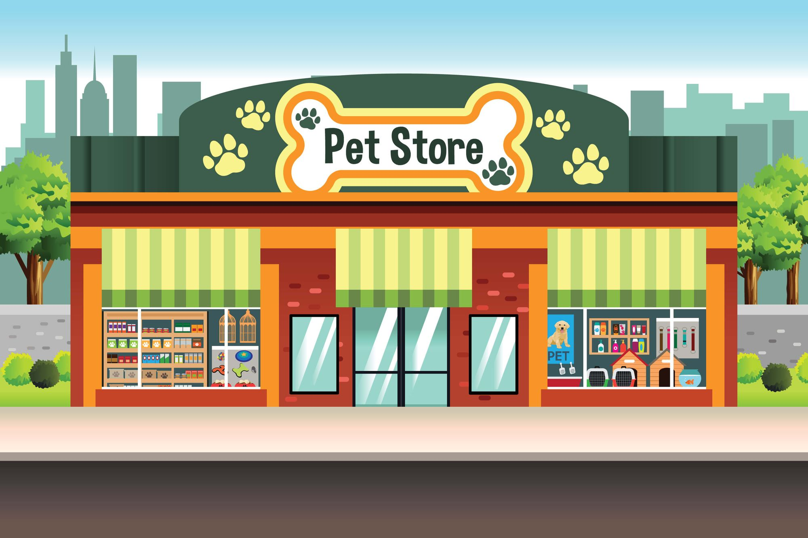
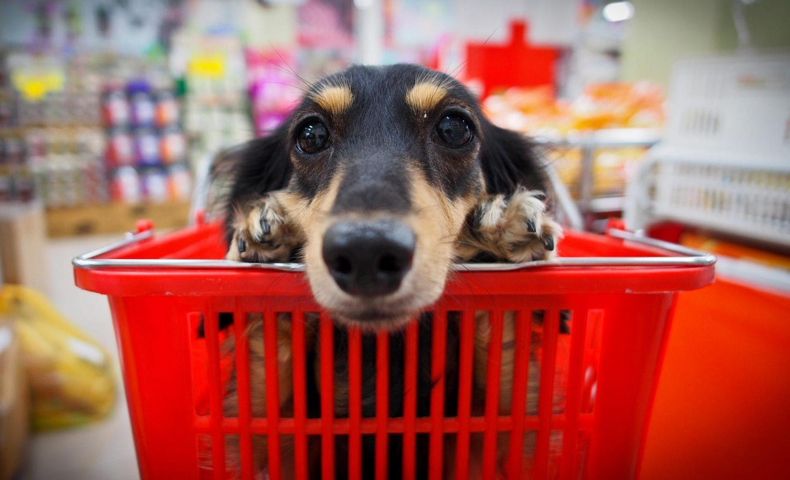

Pagina Principal
voltarBem-vindo ao RedePop! Cuidamos do seu pet com amor e atenção. Oferecemos serviços completos de banho, tosa, consultas veterinárias e uma linha de produtos de alta qualidade. Tudo para garantir a saúde e felicidade do seu melhor amigo. Visite-nos e descubra o melhor para o seu pet!
Sobre a Clínica
voltarNo RedePop, cuidamos com carinho e dedicação do seu pet. Oferecemos uma variedade de serviços, como banho, tosa, consulta veterinária, e produtos de qualidade para o bem-estar dos seus animais de estimação. Nossa equipe é formada por profissionais qualificados, prontos para garantir a melhor experiência para seu pet. Venha nos visitar e descubra como podemos ajudar seu amigo de quatro patas a ser mais feliz e saudável!
Horário de Atendimento
voltarNo RedePop, oferecemos uma variedade de serviços para garantir o bem-estar e a saúde do seu pet. Contamos com banho e tosa personalizados, atendimento veterinário, hidratação de pelagem e muito mais. Nossa equipe qualificada cuida de cada detalhe para que seu pet tenha a melhor experiência possível. Confira abaixo nossa tabela de serviços e preços, com valores que variam de acordo com os dias da semana:
| Serviços | Segunda a Sexta | Sábado | Domingo/feriados |
| Banho Simples | R$ 40,00 | R$ 50,00 | R$ 60,00 |
| Tosa Completa | R$ 70,00 | R$ 80,00 | R$ 90,00 |
| Hidratação de Pelagem | R$ 50,00 | R$ 60,00 | R$ 70,00 |
| Corte de Unhas | R$ 20,00 | R$ 25,00 | R$ 30,00 |
| Consulta Veterinária | R$ 120,00 | R$ 150,00 | R$ 180,00 |
Contato
voltar- Contato - (94) 9 9663-3597
- Avenida Veridiano Cardoso 352, Bela Vista